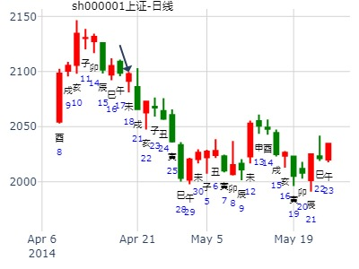
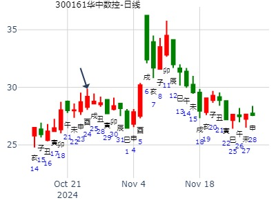
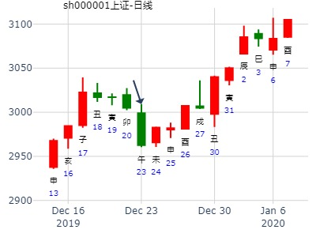
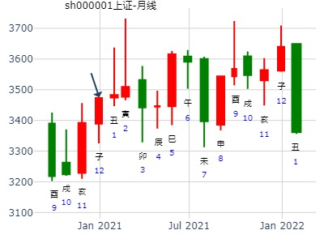

天地否，2011年辛卯年上证K线趋势(李炎)
公历起卦时间：2011年1月22日15时37分 (手工指定)
干支：庚寅年 己丑月 丁丑日 戊申时 （日空：申酉）
乾宫：天地否 (六合) 乾宫：天地否 (六合)
六神 伏神 本 卦 变 卦
青龙 父母壬戌土 ▅▅▅▅▅ 应 父母壬戌土 ▅▅▅▅▅ 应
玄武 兄弟壬申金 ▅▅▅▅▅ 兄弟壬申金 ▅▅▅▅▅
白虎 官鬼壬午火 ▅▅▅▅▅ 官鬼壬午火 ▅▅▅▅▅
腾蛇 妻财乙卯木 ▅▅ ▅▅ 世 妻财乙卯木 ▅▅ ▅▅ 世
勾陈 官鬼乙巳火 ▅▅ ▅▅ 官鬼乙巳火 ▅▅ ▅▅
朱雀 子孙甲子水 父母乙未土 ▅▅ ▅▅ 父母乙未土 ▅▅ ▅▅
三个不同的否卦，有大涨的，有大跌的，有横盘的。
细微点：此处，世爻卯木没有月生日助，关键是初爻父母未土暗动。
参考：否，300277海联讯未来几个月。风生水起
否， 2014年上证大盘走势
主帖标题: 占事：2014年大盘（上证股指）涨跌？
求测内容：2014年上证大盘走势
起卦方式：电脑自动
公历：2014年01月01日07时14分
四柱：癸巳年 甲子月 壬申日 甲辰时 (日空：戌亥)
天地否
白虎 父母庚戌 ／ 应
腾蛇 兄弟戊申 ／
勾陈 官鬼丙午 ／
朱雀 妻财癸卯 ∥ 世
青龙 官鬼乙巳 ∥
子孙庚子：玄武 父母丁未 ∥
其他否年卦，只是卯月涨，辰月有余气冲冲。此卦不一样。
想和干 发表于 2021-1-1 23:59
在下不懂奇门,也不懂各五行所对应的板块,烦请楼主给个结论.谢谢！
占事：试测现在至庚子年丑月底那天哪个板块涨幅最大？
公历起卦时间：2021年1月2日8时51分 (电脑自动)
干支：庚子年 戊子月 庚戌日 庚辰时 （日空：寅卯）
神煞：驿马－申 桃花－卯 日禄－申 贵人－丑，未
乾宫：天地否 (六合)
六神 伏神 本 卦
螣蛇 父母壬戌土 ▅▅▅▅▅ 应
勾陈 兄弟壬申金 ▅▅▅▅▅
朱雀 官鬼壬午火 ▅▅▅▅▅
青龙 妻财乙卯木 ▅▅ ▅▅ 世
玄武 官鬼乙巳火 ▅▅ ▅▅
白虎 子孙甲子水 父母乙未土 ▅▅ ▅▅
主帖标题: Q以岭药业2022.1.4丁巳二-1.7庚申五哪日顶？
以岭药业2022.1.4-1.7哪日顶？
公历起卦时间：2022年1月4日11时7分 (电脑自动)
干支：辛丑年 庚子月 丁巳日 丙午时 （日空：子丑）
神煞：驿马－亥 桃花－午 日禄－午 贵人－酉，亥
乾宫：天地否 (六合)
六神 伏神 本 卦
青龙 父母壬戌土 ▅▅▅▅▅ 应
玄武 兄弟壬申金 ▅▅▅▅▅
白虎 官鬼壬午火 ▅▅▅▅▅
螣蛇 妻财乙卯木 ▅▅ ▅▅ 世
勾陈 官鬼乙巳火 ▅▅ ▅▅
朱雀 子孙甲子水 父母乙未土 ▅▅ ▅▅
测上证2023.1.3辛酉二-1.6甲子五哪日顶？
起卦方式：电脑自动
公历：2023年01月05日11时14分
四柱：壬寅年 壬子月 癸亥日 戊午时 (日空：子丑)
天地否
白虎 ▅▅▅ 父母壬戌土 应
螣蛇 ▅▅▅ 兄弟壬申金
勾陈 ▅▅▅ 官鬼壬午火
朱雀 ▅ ▅ 妻财乙卯木 世
青龙 ▅ ▅ 官鬼乙巳火
玄武 子孙甲子水 ▅ ▅ 父母乙未土
钥语刁钻，仅供参考当天。
女 占事：2015乙未年最强势的股市板块行业是什么
公历起卦时间：2015年2月5日22时29分 (手工指定)
干支：乙未年 戊寅月 壬子日 辛亥时 （日空：寅卯）
乾宫：天地否 (六合) 乾宫：天地否 (六合)
六神 伏神 本 卦 变 卦
白虎 父母壬戌土 ▅▅▅▅▅ 应 父母壬戌土 ▅▅▅▅▅ 应
腾蛇 兄弟壬申金 ▅▅▅▅▅ 兄弟壬申金 ▅▅▅▅▅
勾陈 官鬼壬午火 ▅▅▅▅▅ 官鬼壬午火 ▅▅▅▅▅
朱雀 妻财乙卯木 ▅▅ ▅▅ 世 妻财乙卯木 ▅▅ ▅▅ 世
青龙 官鬼乙巳火 ▅▅ ▅▅ 官鬼乙巳火 ▅▅ ▅▅
玄武 子孙甲子水 父母乙未土 ▅▅ ▅▅ 父母乙未土 ▅▅ ▅▅
占事：600202哈空调是牛股吗
排卦：元亨利贞网六爻在线排盘系统 http://www.china95.net
公历起卦时间：2016年2月15日17时59分 (电脑自动)
干支：丙申年 庚寅月 丁卯日 己酉时 （日空：戌亥）
乾宫：天地否 (六合)
六神 伏神 本 卦
青龙 父母壬戌土 ▅▅▅▅▅ 应
玄武 兄弟壬申金 ▅▅▅▅▅
白虎 官鬼壬午火 ▅▅▅▅▅
腾蛇 妻财乙卯木 ▅▅ ▅▅ 世
勾陈 官鬼乙巳火 ▅▅ ▅▅
朱雀 子孙甲子水 父母乙未土 ▅▅ ▅▅
财得日月，但子孙无力
主帖标题: 六爻猜想：2020年2月18日上证收盘指数值?
试测2020年2月18日上证收盘指数个位值yn?
公历起卦时间：2020年2月18日13时46分 (电脑自动)
干支：庚子年 戊寅月 辛卯日 乙未时 （日空：午未）
乾宫：天地否 (六合)
六神 伏神 本 卦
螣蛇 父母壬戌土 ▅▅▅▅▅ 应
勾陈 兄弟壬申金 ▅▅▅▅▅
朱雀 官鬼壬午火 ▅▅▅▅▅
青龙 妻财乙卯木 ▅▅ ▅▅ 世
玄武 官鬼乙巳火 ▅▅ ▅▅
白虎 子孙甲子水 父母乙未土 ▅▅ ▅▅
钥语刁钻，仅供参考当天。
主帖标题: 大家一起来，九缠烂打：上证2021.2.8收盘个位数是几？
出生：2021 年 性别：男 占事：是6？
公历起卦时间：2021年2月6日15时53分 (电脑自动)
干支：辛丑年 庚寅月 乙酉日 甲申时 （日空：午未）
乾宫：天地否 (六合) 乾宫：天地否 (六合)
六神 伏神 本 卦 变 卦
玄武 父母壬戌土 ▅▅▅▅▅ 应 父母壬戌土 ▅▅▅▅▅ 应
白虎 兄弟壬申金 ▅▅▅▅▅ 兄弟壬申金 ▅▅▅▅▅
螣蛇 官鬼壬午火 ▅▅▅▅▅ 官鬼壬午火 ▅▅▅▅▅
勾陈 妻财乙卯木 ▅▅ ▅▅ 世 妻财乙卯木 ▅▅ ▅▅ 世
朱雀 官鬼乙巳火 ▅▅ ▅▅ 官鬼乙巳火 ▅▅ ▅▅
青龙 子孙甲子水 父母乙未土 ▅▅ ▅▅ 父母乙未土 ▅▅ ▅▅

钥语刁钻，仅供参考当天。
主帖标题: 2022年第8周周卦收集(8个)
1，http://bbs.64gua.com/forum.php?mod=viewthread&tid=8013605&extra=page%3D1
公历时间：2022年2月16日15时14分
干 支：壬寅年 壬寅月 庚子日 甲申时
旬 空：辰巳 辰巳 辰巳 午未
乾宫：天地否（六合）
六神 伏 神 【本 卦】
螣蛇 ▄▄▄▄▄ 父母壬戌土 应
勾陈 ▄▄▄▄▄ 兄弟壬申金
朱雀 ▄▄▄▄▄ 官鬼壬午火
青龙 ▄▄ ▄▄ 妻财乙卯木 世
玄武 ▄▄ ▄▄ 官鬼乙巳火
白虎 子孙甲子水 ▄▄ ▄▄ 父母乙未土
300277海联讯未来几个月。风生水起
时间：2023年2月4日13点31分 星期六
干支：癸卯年 甲寅月 癸巳日 己未时
寅月 癸巳日（旬空：午未）
六神 藏爻 天地否 乾宫
白虎 ■■■■■■父母戌土 应
腾蛇 ■■■■■■兄弟申金
勾陈 ■■■■■■官鬼午火
朱雀 父母辰土■■ ■■妻财卯木 世
青龙 妻财寅木■■ ■■官鬼巳火
玄武 子孙子水■■ ■■父母未土

占事：太极实业(600667明天涨跌
排卦：元亨利贞网六爻在线排盘系统
公历起卦时间：2014年3月25日15时48分 (电脑自动)
干支：甲午年 丁卯月 乙未日 甲申时 （日空：辰巳）
乾宫：天地否 (六合)
六神 伏神 本 卦
玄武 父母壬戌土 ▅▅▅▅▅ 应
白虎 兄弟壬申金 ▅▅▅▅▅
腾蛇 官鬼壬午火 ▅▅▅▅▅
勾陈 妻财乙卯木 ▅▅ ▅▅ 世
朱雀 官鬼乙巳火 ▅▅ ▅▅
青龙 子孙甲子水 父母乙未土 ▅▅ ▅▅
上证指数3月16 -20日行情预测？ 再人
起卦时间：2015年03月14日10时38分起卦方式：手摇硬币起卦
干支：乙未年 己卯月 己丑日 己巳时
旬空：辰巳 申酉 午未 戌亥
六神 伏神 乾宫：天地否（六合）
【本 卦】
勾陈 ▅▅▅▅▅ 父母壬戌土 应
朱雀 ▅▅▅▅▅ 兄弟壬申金
青龙 ▅▅▅▅▅ 官鬼壬午火
玄武 ▅▅ ▅▅ 妻财乙卯木 世
白虎 ▅▅ ▅▅ 官鬼乙巳火
滕蛇 子孙甲子水 ▅▅ ▅▅ 父母乙未土
断：1、卦遇六合，行情不温不火，不会大涨或者大跌、维持横盘波动之象。
2、财爻卯木值月旺相持世，元神子水休囚受克，说明行情已在高位，难以再向上运行了。
风生水起 占事：顺丰控股未来三个月
起卦方式：手动摇卦
公历时间：2017年3月2日8时29分
干 支：丁酉年 壬寅月 戊子日 丙辰时
旬 空：辰巳 辰巳 午未 子丑
否静卦
朱雀 ▅▅▅▅▅ 父母戌土 应
青龙 ▅▅▅▅▅ 兄弟申金
玄武 ▅▅▅▅▅ 官鬼午火
白虎 ▅▅ ▅▅ 妻财卯木 世
腾蛇 ▅▅ ▅▅ 官鬼巳火
勾陈 子孙子水▅▅ ▅▅ 父母未土
莫非是子冲午火暗动，泄财，结果摇卦完后就是大顶。
昆药集团是否还能创新高。在线摇卦
时间: 2019-03-21 10时38分
干支: 己亥年丁卯月丁巳日 (旬空: 子丑 )
否静卦
青龙 ▅▅▅▅▅ 父母戌土 应
玄武 ▅▅▅▅▅ 兄弟申金
白虎 ▅▅▅▅▅ 官鬼午火
腾蛇 ▅▅ ▅▅ 妻财卯木 世
勾陈 ▅▅ ▅▅ 官鬼巳火
朱雀 子孙子水▅▅ ▅▅ 父母未土
测某电气股票在2020.3.16-2020.6.30走势
公历起卦时间：2020年3月15日18时49分 (手工指定)
干支：庚子年 己卯月 丁巳日 己酉时 （日空：子丑）
神煞：驿马－亥 桃花－午 日禄－午 贵人－酉，亥
乾宫：天地否 (六合) 乾宫：天地否 (六合)
六神 伏神 本 卦 变 卦
青龙 父母壬戌土 ▅▅▅▅▅ 应 父母壬戌土 ▅▅▅▅▅ 应
玄武 兄弟壬申金 ▅▅▅▅▅ 兄弟壬申金 ▅▅▅▅▅
白虎 官鬼壬午火 ▅▅▅▅▅ 官鬼壬午火 ▅▅▅▅▅
螣蛇 妻财乙卯木 ▅▅ ▅▅ 世 妻财乙卯木 ▅▅ ▅▅ 世
勾陈 官鬼乙巳火 ▅▅ ▅▅ 官鬼乙巳火 ▅▅ ▅▅
朱雀 子孙甲子水 父母乙未土 ▅▅ ▅▅ 父母乙未土 ▅▅ ▅▅
上证3.23三收盘走势？
排卦：元亨利贞网六爻在线排盘系统 https://www.china95.net
公历起卦时间：2022年3月22日18时7分 (电脑自动)
干支：壬寅年 癸卯月 甲戌日 癸酉时 （日空：申酉）
乾宫：天地否 (六合)
六神 伏神 本 卦
玄武 父母壬戌土 ▅▅▅▅▅ 应
白虎 兄弟壬申金 ▅▅▅▅▅
螣蛇 官鬼壬午火 ▅▅▅▅▅
勾陈 妻财乙卯木 ▅▅ ▅▅ 世
朱雀 官鬼乙巳火 ▅▅ ▅▅
青龙 子孙甲子水 父母乙未土 ▅▅ ▅▅
姓名： 男 占事：5.5-6.6 巳火月
公历时间：2014年4月18日19时31分
干 支：甲午年 戊辰月 己未日 甲戌时
旬 空：辰巳 戌亥 (子丑) 申酉
乾宫：天地否（六合）
六神 伏 神 【本 卦】
勾陈 ▄▄▄▄▄ 父母壬戌土 应
朱雀 ▄▄▄▄▄ 兄弟壬申金
青龙 ▄▄▄▄▄ 官鬼壬午火
玄武 ▄▄ ▄▄ 妻财乙卯木 世
白虎 ▄▄ ▄▄ 官鬼乙巳火
螣蛇 子孙甲子水 ▄▄ ▄▄ 父母乙未土
此处关键莫非是世爻卯木入日墓？
应爻月破？唯一跟招财公主的剥之蛊合拍的就是妻财卯木。

主帖标题: 变爻临日卦例一则
公历起卦时间：2022年4月8日11时7分 (电脑自动)
农历：壬寅年三月初八日午时
干支：壬寅年 甲辰月 辛卯日 甲午时 （日空：午未）
乾宫：天地否 (六合)
六神 伏神 本 卦
螣蛇 父母壬戌土 ▅▅▅▅▅ 应
勾陈 兄弟壬申金 ▅▅▅▅▅
朱雀 官鬼壬午火 ▅▅▅▅▅
青龙 妻财乙卯木 ▅▅ ▅▅ 世
玄武 官鬼乙巳火 ▅▅ ▅▅
白虎 子孙甲子水 父母乙未土 ▅▅ ▅▅
测沪市4.11-15 大盘。
卯日临世，临日，处于三爻，三爻为短高，危险。卯日涨。
后面的流日全是泄克妻财的，所以周线必跌。
妻财在辰月有余气，妻财在酉日暗动，涨；未日入库，安全日。其它日子都需小心。
占事：601118 海南橡胶明天涨跌
排卦：元亨利贞网六爻在线排盘系统 http://www.china95.net
公历起卦时间：2014年5月26日15时21分 (电脑自动)
干支：甲午年 己巳月 丁酉日 戊申时 （日空：辰巳）
乾宫：天地否 (六合)
六神 伏神 本 卦
青龙 父母壬戌土 ▅▅▅▅▅ 应
玄武 兄弟壬申金 ▅▅▅▅▅
白虎 官鬼壬午火 ▅▅▅▅▅
腾蛇 妻财乙卯木 ▅▅ ▅▅ 世
勾陈 官鬼乙巳火 ▅▅ ▅▅
朱雀 子孙甲子水 父母乙未土 ▅▅ ▅▅
楼主| 发表于 2020-5-20 10:43 | 只看该作者
航天长峰5.20癸亥-5.22乙丑的底？
公历起卦时间：2020年5月20日10时42分 (电脑自动)
干支：庚子年 辛巳月 癸亥日 丁巳时 （日空：子丑）
乾宫：天地否 (六合)
六神 伏神 本 卦
白虎 父母壬戌土 ▅▅▅▅▅ 应
螣蛇 兄弟壬申金 ▅▅▅▅▅
勾陈 官鬼壬午火 ▅▅▅▅▅
朱雀 妻财乙卯木 ▅▅ ▅▅ 世
青龙 官鬼乙巳火 ▅▅ ▅▅
玄武 子孙甲子水 父母乙未土 ▅▅ ▅▅
主帖标题: 农历午月上证指数汇总
1
吉祥老师
http://bbs.64gua.com/forum.php?m ... 5124&extra=page%3D1
排卦：元亨利贞网六爻在线排盘系统
公历起卦时间：2020年5月23日17时52分 (手工指定)
干支：庚子年 辛巳月 丙寅日 丁酉时 （日空：戌亥）
乾宫：天地否 (六合)
六神 伏神 本 卦
青龙 父母壬戌土 ▅▅▅▅▅ 应
玄武 兄弟壬申金 ▅▅▅▅▅
白虎 官鬼壬午火 ▅▅▅▅▅
螣蛇 妻财乙卯木 ▅▅ ▅▅ 世
勾陈 官鬼乙巳火 ▅▅ ▅▅
朱雀 子孙甲子水 父母乙未土 ▅▅ ▅▅
定性卦，世爻得日扶。
主帖标题: 上证5.6甲寅四收盘走势
出生：2021 年 性别：男 占事：没填
公历起卦时间：2021年5月5日9时0分 (电脑自动)
干支：辛丑年 壬辰月 癸丑日 丁巳时 （日空：寅卯）
否静卦
白虎 ▅▅▅▅▅ 父母戌土 应
腾蛇 ▅▅▅▅▅ 兄弟申金
勾陈 ▅▅▅▅▅ 官鬼午火
朱雀 ▅▅ ▅▅ 妻财卯木 世
青龙 ▅▅ ▅▅ 官鬼巳火
玄武 子孙子水▅▅ ▅▅ 父母未土

寅卯弱，旬空，出空又不管用？
占事: 月底前大盘走势如何？ 跌。
起卦方式：手动摇卦 周易天地www.64gua.com六爻线上排盘系统
公历时间：2011年7月20日11时51分
干支：辛卯年 乙未月 丙子日 甲午时
旬空：午未 辰巳 申酉 辰巳
乾宫：天地否（六合）
青龙 ▄▄▄▄▄ 父母壬戌土 应
玄武 ▄▄▄▄▄ 兄弟壬申金
白虎 ▄▄▄▄▄ 官鬼壬午火
螣蛇 ▄▄ ▄▄ 妻财乙卯木 世
勾陈 ▄▄ ▄▄ 官鬼乙巳火
朱雀 子孙甲子水 ▄▄ ▄▄ 父母乙未土

未月入墓，总是不容易涨。
7.23大盘走势——乾隆币卦??niubi
姓名：?出生年:1981?性别：男?占事：7月23日大盘?
起卦方式：手动摇卦??
公历时间：2015年7月22日15时10分
干 支：乙未年癸未月己亥日壬申时 旬空：日（辰巳空）时（戌亥空)
乾宫：天地否（六合）
六神? 伏 神 【本 卦】
勾陈 ▄▄▄▄▄ 父母壬戌土 应
朱雀 ▄▄▄▄▄ 兄弟壬申金
青龙 ▄▄▄▄▄ 官鬼壬午火
玄武 ▄▄??▄▄ 妻财乙卯木 世
白虎 ▄▄??▄▄ 官鬼乙巳火
螣蛇 子孙甲子水 ▄▄??▄▄ 父母乙未土
占事：600696匹凸匹明天涨跌
公历起卦时间：2016年7月5日18时6分 (电脑自动)
干支：丙申年 甲午月 戊子日 辛酉时 （日空：午未）
神煞：驿马－寅 桃花－酉 日禄－巳 贵人－丑，未
乾宫：天地否 (六合) 乾宫：天地否 (六合)
六神 伏神 本 卦 变 卦
朱雀 父母壬戌土 ▅▅▅▅▅ 应 父母壬戌土 ▅▅▅▅▅ 应
青龙 兄弟壬申金 ▅▅▅▅▅ 兄弟壬申金 ▅▅▅▅▅
玄武 官鬼壬午火 ▅▅▅▅▅ 官鬼壬午火 ▅▅▅▅▅
白虎 妻财乙卯木 ▅▅ ▅▅ 世 妻财乙卯木 ▅▅ ▅▅ 世
腾蛇 官鬼乙巳火 ▅▅ ▅▅ 官鬼乙巳火 ▅▅ ▅▅
勾陈 子孙甲子水 父母乙未土 ▅▅ ▅▅ 父母乙未土 ▅▅ ▅▅
占事：000785武汉中商明天涨跌
排卦：元亨利贞网六爻在线排盘系统 http://www.china95.net
公历起卦时间：2016年7月28日17时40分 (电脑自动)
干支：丙申年 乙未月 辛亥日 丁酉时 （日空：寅卯）
乾宫：天地否 (六合)
六神 伏神 本 卦
腾蛇 父母壬戌土 ▅▅▅▅▅ 应
勾陈 兄弟壬申金 ▅▅▅▅▅
朱雀 官鬼壬午火 ▅▅▅▅▅
青龙 妻财乙卯木 ▅▅ ▅▅ 世
玄武 官鬼乙巳火 ▅▅ ▅▅
白虎 子孙甲子水 父母乙未土 ▅▅ ▅▅
占事：又占未月上证指数月测,请老师们给看看。
公历时间：2020年7月7日6时26分
干 支：庚子年 癸未月 辛亥日 辛卯时
旬 空：辰巳 申酉 寅卯 午未
神 煞：驿马─巳 桃花─子 日禄─酉 贵人─寅，午
中国预测网纳甲六爻排盘
乾宫：天地否（六合）
六神 伏 神 【本 卦】
螣蛇 ▄▄▄▄▄ 父母壬戌土 应
勾陈 ▄▄▄▄▄ 兄弟壬申金
朱雀 ▄▄▄▄▄ 官鬼壬午火
青龙 ▄▄ ▄▄ 妻财乙卯木 世
玄武 ▄▄ ▄▄ 官鬼乙巳火
白虎 子孙甲子水 ▄▄ ▄▄ 父母乙未土
世入月墓，又旬空，定性为涨不动？

主帖标题: 8月5-9日大盘涨跌卦
占事：8月5-9日大盘涨跌？
公历起卦时间：2013年8月2日15时40分 (手工指定)
干支：癸巳年 己未月 庚子日 甲申时 （日空：辰巳）
乾宫：天地否 (六合) 乾宫：天地否 (六合)
六神 伏神 本 卦 变 卦
腾蛇 父母壬戌土 ▅▅▅▅▅ 应 父母壬戌土 ▅▅▅▅▅ 应
勾陈 兄弟壬申金 ▅▅▅▅▅ 兄弟壬申金 ▅▅▅▅▅
朱雀 官鬼壬午火 ▅▅▅▅▅ 官鬼壬午火 ▅▅▅▅▅
青龙 妻财乙卯木 ▅▅ ▅▅ 世 妻财乙卯木 ▅▅ ▅▅ 世
玄武 官鬼乙巳火 ▅▅ ▅▅ 官鬼乙巳火 ▅▅ ▅▅
白虎 子孙甲子水 父母乙未土 ▅▅ ▅▅ 父母乙未土 ▅▅ ▅▅
卯与戌日都容易大涨。
最近半年大盘如何？
公历起卦时间：2016年8月19日11时57分 (在线摇卦)
干支：丙申年 丙申月 癸酉日 戊午时 （日空：戌亥）
神煞：驿马－亥 桃花－午 日禄－子 贵人－卯，巳
乾宫：天地否 (六合) 乾宫：天地否 (六合)
六神 伏神 本 卦 变 卦
白虎 父母壬戌土 ▅▅▅▅▅ 应
腾蛇 兄弟壬申金 ▅▅▅▅▅
勾陈 官鬼壬午火 ▅▅▅▅▅
朱雀 妻财乙卯木 ▅▅ ▅▅ 世
青龙 官鬼乙巳火 ▅▅ ▅▅
玄武 子孙甲子水 父母乙未土 ▅▅ ▅▅
卯弱极，月克日破，酉月再月破，但是戌月就月合涨。

占问事宜：8月31星期三上证指数？
公历：2016年8月30日22时7分，星期二。
干支：丙申年 丙申月 甲申日 乙亥时
主变卦 天地否(乾宫) [空亡:午、未]
玄武 ▅▅▅▅▅ 父母壬戌土 应
白虎 ▅▅▅▅▅ 兄弟壬申金
螣蛇 ▅▅▅▅▅ 官鬼壬午火
勾陈 ▅▅ ▅▅ 妻财乙卯木 世
朱雀 ▅▅ ▅▅ 官鬼乙巳火
青龙 子孙甲子水 ▅▅ ▅▅ 父母乙未土
风生水起 占事: 洪都航空 未来一周
公历时间：2014年9月3日15时23分
干支：甲午年 壬申月 丁丑日 戊申时
旬空：辰巳 戌亥 申酉 寅卯
乾宫：天地否（六合）
六神 伏 神 【本 卦】
青龙 ▄▄▄▄▄ 父母壬戌土 应
玄武 ▄▄▄▄▄ 兄弟壬申金
白虎 ▄▄▄▄▄ 官鬼壬午火
螣蛇 ▄▄ ▄▄ 妻财乙卯木 世
勾陈 ▄▄ ▄▄ 官鬼乙巳火
朱雀 子孙甲子水 ▄▄ ▄▄ 父母乙未土
兄弟空，有利。
丑日起卦，一起多得，兄弟入日墓，又冲去父母爻未土，冲飞露伏。
隔日又是寅卯值班。
后午未空时，丑日冲实未土，反而见顶。
兄弟多旺而旬空入墓。被冲时不起作用。

天地否静卦，居然暴涨。关键在于世爻月合日合于测卦日。
占事：测10月9日上证K线趋势
公历起卦时间：2009年10月8日15时47分 (在线摇卦)
干支：己丑年 甲戌月 丙戌日 丙申时 （日空：午未）
乾宫：天地否 (六合) 乾宫：天地否 (六合)
六神 伏神 本 卦 变 卦
青龙 父母壬戌土 ▅▅▅▅▅ 应 父母壬戌土 ▅▅▅▅▅ 应
玄武 兄弟壬申金 ▅▅▅▅▅ 兄弟壬申金 ▅▅▅▅▅
白虎 官鬼壬午火 ▅▅▅▅▅ 官鬼壬午火 ▅▅▅▅▅
腾蛇 妻财乙卯木 ▅▅ ▅▅ 世 妻财乙卯木 ▅▅ ▅▅ 世
勾陈 官鬼乙巳火 ▅▅ ▅▅ 官鬼乙巳火 ▅▅ ▅▅
朱雀 子孙甲子水 父母乙未土 ▅▅ ▅▅ 父母乙未土 ▅▅ ▅▅
空下伏神。子孙爻。心怡的卦。
世爻月合日合，超旺。
月破者，逢合之月必能上涨 (2011-03-05 14:04:20)转载▼
测吉恩镍业600432下半年何月可以拉升？
时间: 2010-10-02
干支：庚寅年 乙酉月 乙酉日 辛巳时 (旬空：午未)
神煞：驿马—亥 桃花—午 日禄—卯 贵人—子，申
乾宫：天地否（六合）
六神 伏 神 【本 卦】
玄武 ▅▅▅▅▅ 父母壬戌土 应
白虎 ▅▅▅▅▅ 兄弟壬申金
螣蛇 ▅▅▅▅▅ 官鬼壬午火
勾陈 ▅▅ ▅▅ 妻财乙卯木 世
朱雀 ▅▅ ▅▅ 官鬼乙巳火
青龙 子孙甲子水 ▅▅ ▅▅ 父母乙未土
解析：此卦财爻月破、日破，却有两官贴身，弱势之极，却不屈服于强兄之势，“月破者，喜合喜填”，戌月正应破而逢合之月，必能上涨。
验证：戌月涨幅超过30%。
持有的东田微到春节的财运如何-金玉堂
时间: 2024-10-23
干支: 甲辰年甲戌月庚申日 (旬空: 子丑 )
否静卦
腾蛇 ▅▅▅▅▅ 父母戌土 应
勾陈 ▅▅▅▅▅ 兄弟申金
朱雀 ▅▅▅▅▅ 官鬼午火
青龙 ▅▅ ▅▅ 妻财卯木 世
玄武 ▅▅ ▅▅ 官鬼巳火
白虎 ▅▅ ▅▅ 父母未土
占事：持有的华中数控到11月6日财运-金玉堂
时间: 2024-10-24
干支: 甲辰年甲戌月辛酉日 (旬空: 子丑 )
否静卦
腾蛇 ▅▅▅▅▅ 父母戌土 应
勾陈 ▅▅▅▅▅ 兄弟申金
朱雀 ▅▅▅▅▅ 官鬼午火
青龙 ▅▅ ▅▅ 妻财卯木 世
玄武 ▅▅ ▅▅ 官鬼巳火
白虎 ▅▅ ▅▅ 父母未土

占事：南京发展如何？
时间：2013年11月10日21点53分 星期日
干支：癸巳年 癸亥月 庚辰日 丁亥时
亥月 庚辰日（旬空：申酉）
六神 藏爻 天地否 乾宫
腾蛇 ■■■■■■父母戌土 应
勾陈 ■■■■■■兄弟申金
朱雀 ■■■■■■官鬼午火
青龙 父母辰土■■ ■■妻财卯木 世
玄武 妻财寅木■■ ■■官鬼巳火
白虎 子孙子水■■ ■■父母未土
主帖标题: 占事：000680山推股份02015年走势
占事：000680山推股份2015年走势
公历起卦时间：2014年12月25日21时30分 (在线摇卦)
干支：甲午年 丙子月 庚午日 丁亥时 （日空：戌亥）
乾宫：天地否 (六合)
六神 伏神 本 卦 变 卦
腾蛇 父母壬戌土 ▅▅▅▅▅ 应
勾陈 兄弟壬申金 ▅▅▅▅▅
朱雀 官鬼壬午火 ▅▅▅▅▅
青龙 妻财乙卯木 ▅▅ ▅▅ 世
玄武 官鬼乙巳火 ▅▅ ▅▅
白虎 子孙甲子水 父母乙未土 ▅▅ ▅▅

与2018-12-21问大盘年卦类似，财在卯，则卯基本为高点。
2019年上证走势？--by 阿晖
时间: 2018-12-21 12时12分
干支: 戊戌年甲子月丁亥日丙午时 (旬空: 午未 )
否静卦
青龙 ▅▅▅▅▅ 父母戌土 应
玄武 ▅▅▅▅▅ 兄弟申金
白虎 ▅▅▅▅▅ 官鬼午火
腾蛇 ▅▅ ▅▅ 妻财卯木 世
勾陈 ▅▅ ▅▅ 官鬼巳火
朱雀 子孙子水▅▅ ▅▅ 父母未土
主帖标题: 上证指数周趋势预测（2019-12-23至12-27）
占事：上证指数周趋势预测（2019-12-23至12-27）
公历：2019年12月23日9时20分，星期一。
干支：己亥年 丙子月 甲午日 己巳时 (卦身：申)
主变卦 天地否(乾宫) [空亡:辰、巳]
玄武 ▅▅▅▅▅ 父母壬戌土 应
白虎 ▅▅▅▅▅ 兄弟壬申金
螣蛇 ▅▅▅▅▅ 官鬼壬午火
勾陈 ▅▅ ▅▅ 妻财乙卯木 世
朱雀 ▅▅ ▅▅ 官鬼乙巳火
青龙 子孙甲子水 ▅▅ ▅▅ 父母乙未土


主帖标题: 试测上证12.9三丙戌-12.11五戊子哪日顶？
占事：上证12.9三丙戌-12.11五戊子哪日顶？
公历起卦时间：2020年12月9日15时24分 (电脑自动)
干支：庚子年 戊子月 丙戌日 丙申时 （日空：午未）
神煞：驿马－申 桃花－卯 日禄－巳 贵人－酉，亥
乾宫：天地否 (六合) 乾宫：天地否 (六合)
六神 伏神 本 卦 变 卦
青龙 父母壬戌土 ▅▅▅▅▅ 应 父母壬戌土 ▅▅▅▅▅ 应
玄武 兄弟壬申金 ▅▅▅▅▅ 兄弟壬申金 ▅▅▅▅▅
白虎 官鬼壬午火 ▅▅▅▅▅ 官鬼壬午火 ▅▅▅▅▅
螣蛇 妻财乙卯木 ▅▅ ▅▅ 世 妻财乙卯木 ▅▅ ▅▅ 世
勾陈 官鬼乙巳火 ▅▅ ▅▅ 官鬼乙巳火 ▅▅ ▅▅
朱雀 子孙甲子水 父母乙未土 ▅▅ ▅▅ 父母乙未土 ▅▅ ▅▅

主帖标题: 年卦-----2021年大盘年卦收集
5、我心蒙尘老师
http://bbs.macd.cn/thread-2901264-1-1.html
公元2021年上证年卦
来自：MACD论坛(bbs.macd.cn) 作者：我心蒙尘 浏览：711 回复：15
时间: 2020-12-31
干支: 庚子年戊子月戊申日 (旬空: 寅卯 )
天地否
勾陈 ▅▅▅ 父母壬戌土 应
朱雀 ▅▅▅ 兄弟壬申金
青龙 ▅▅▅ 官鬼壬午火
玄武 ▅ ▅ 妻财乙卯木 世
白虎 ▅ ▅ 官鬼乙巳火
螣蛇 子孙甲子水 ▅ ▅ 父母乙未土
解读：卦象总体不吉，各位小心。每月走势且看当月出卦。

试测12.21上证收盘个位数？-ayn
出生：2021 年 性别：男 占事：没填
排卦：元亨利贞网六爻在线排盘系统 https://www.china95.net
公历起卦时间：2021年12月20日15时48分 (电脑自动)
干支：辛丑年 庚子月 壬寅日 戊申时 （日空：辰巳）
神煞：驿马－申 桃花－卯 日禄－亥 贵人－卯，巳
乾宫：天地否 (六合) 乾宫：天地否 (六合)
六神 伏神 本 卦 变 卦
白虎 父母壬戌土 ▅▅▅▅▅ 应 父母壬戌土 ▅▅▅▅▅ 应
螣蛇 兄弟壬申金 ▅▅▅▅▅ 兄弟壬申金 ▅▅▅▅▅
勾陈 官鬼壬午火 ▅▅▅▅▅ 官鬼壬午火 ▅▅▅▅▅
朱雀 妻财乙卯木 ▅▅ ▅▅ 世 妻财乙卯木 ▅▅ ▅▅ 世
青龙 官鬼乙巳火 ▅▅ ▅▅ 官鬼乙巳火 ▅▅ ▅▅
玄武 子孙甲子水 父母乙未土 ▅▅ ▅▅ 父母乙未土 ▅▅ ▅▅